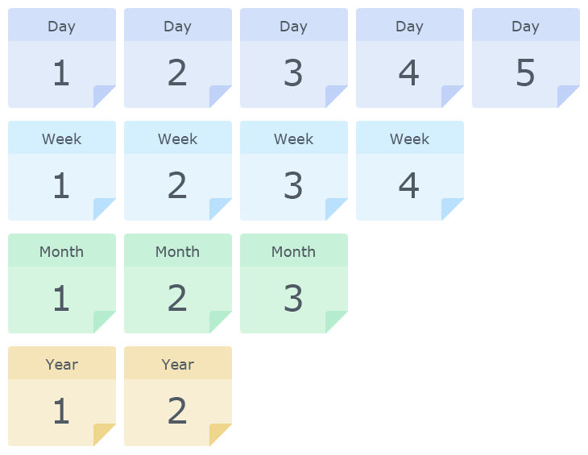

Un'istantanea LUN è una copia in sola lettura in un punto nel tempo di un LUN.
Selezionare un'istantanea di un punto nel tempo per ripristinare i dati su un LUN.
Creare una copia scrivibile di un LUN o un'istantanea del LUN.
Politica di conservazione
Quest'opzione fornisce una soluzione ideale per contribuire a specificare le quantità massime delle versioni di istantanee per salvare lo spazio su volume, ma potrebbe essere necessario conservare le istantanee per periodi di tempo più lunghi. Per la politica di conservazione, occorre considerare quanto segue:
- Synology impiega la politica di conservazione GFS (Grandfather-Father-Son). È possibile configurare le quantità massime di versioni di istantanee da conservare per i seguenti intervalli di tempo rispettivamente: orario, giornaliero, settimanale, mensile e annuale.
- Un'istantanea può soddisfare varie regole di conservazione contemporaneamente. Ad esempio, un'istantanea può soddisfare le regole giornaliere, settimanali e mensili.
- Le istantanee meno recenti saranno conservate se si acquisiscono molte istantanee entro un determinato periodo. Ad esempio, se si imposta una regola di conservazione su 10 istantanee settimanali, è la pianificazione delle istantanee è impostata sull'acquisizione di un'istantanea al giorno, Snapshot Replication conserverà l'istantanea meno recente di ciascuna settimana per le ultime 10 settimane.
- Se non sono state acquisite istantanee per un determinato periodo, il sistema conserverà le istantanee più recenti. Ad esempio, se la regola istantanea giornaliera è impostata su 15 e non sono state acquisite istantanee negli ultimi 30 giorni, il sistema conserverà le istantanee acquisite da 30 a 45 giorni prima.
- Tutte le versioni di istantanee entro un'ora dall'acquisizione dell'istantanea più recente verranno conservate per impostazione predefinita, per semplificare la ricerca e il ripristino da versioni di istantanee recenti. È anche possibile bloccare un'istantanea per evitarne la rimozione automatica prevista dalle regole di conservazione in uso.
Esempio 1:
per conservare le istantanee giornaliere per gli ultimi 3 mesi, le istantanee settimanali per gli ultimi 4-6 mesi e le istantanee per gli ultimi 7-9 mesi, è necessario inserire 0 per le istantanee orarie, 90 per le istantanee giornaliere, 24 per le istantanee settimanali, 9 per le istantanee mensili e 0 per le istantanee annuali.
Esempio 2:
per conservare le istantanee orarie per gli ultimi 2 giorni, le istantanee giornaliere per l'ultima settimana, le istantanee settimanali per l'ultimo mese e le istantanee mensili per l'ultimo anno, è necessario inserire 48 per le istantanee orarie, 7 per le istantanee giornaliere, 4 per le istantanee settimanali, 12 per le istantanee mensili e 0 per le istantanee annuali.
